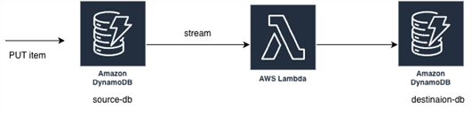

2026년도 전국기능경기대회
1. 요구사항
당신은 Unicorn Tickets의 DevOps 엔지니어로써 콘서트 예약 플랫폼의 클라우드 환경을 설계하고 운영하고자 합니다. 티켓 예약 시 사용자들이 몰려 높은 트래픽이 발생할 수 있기에 확장성 높고 안정적이여야 하며, 이를 위해 컨테이너 오케스트레이션 도구로 EKS를 선택하였습니다. 아래 다이어그램과 주어진 요구사항을 기반으로 인프라를 구축합니다.
Diagram

Tech Stack
2. 선수 유의사항
1) 기계 및 공구 등의 사용 시 안전에 유의하시고, 필요 시 안전장비 및 복장 등을 착용하여 사고를 예방하여 주시기 바랍니다.
2) 작업 중 화상, 감전, 찰과상 등 안전사고 예방에 유의하시고, 공구나 작업도구 사용 시 안전보호구 착용 등 안전수칙을 준수하시기 바랍니다.
3) 작업 중 공구의 사용에 주의하고, 안전수칙을 준수하여 사고를 예방합니다.
4) 경기 시작 전 가벼운 스트레칭 등으로 긴장을 풀어주시고, 작업도구의 사용 시 안전에 주의하십시오.
5) 문제에 제시된 괄호박스 < > 는 변수를 뜻함으로 선수가 적절히 변경하여 사용해야 합니다.
6) 문제 풀이와 채점의 효율을 위해 보안 그룹의 80/443 Outbound는 Anyopen 하도록 합니다.
7) 모든 리소스는 서울(ap-northeast-2) 리전에 구성하며, 문제에서 주어지지 않는 값들은 AWS Well-Architected Framework 6 pillars를 기준으로 적절한 값을 설정해야 합니다.
단, CloudFront 등 일부 서울 리전을 사용하지 못하는 리소스가 있을 수 있음에 유의합니다.
8) 모든 이름, 태그, 변수는 대소문자를 구분하며, Tag 값을 올바르게 설정하도록 유의합니다.
9) 과제 종료 전 실행 중인 테스트 및 부하를 중지하여 서버에 문제가 없도록 해야 합니다.
10) 문제지에 표기된 중괄호 { }는 동일 패턴의 리소스를 축약 표기한 것이며, 선수가 중괄호 내 값을 각각 전개하여 사용해야 합니다. (예: unicorn-subnet-pub-{a,b,c} -> unicorn-subnet-pub-a, unicorn-subnet-pub-b, unicorn-subnet-pub-c)
11) 모든 IAM Policy 및 리소스 기반 Policy(Key Policy, Bucket Policy 등)은 Principal: "*" 또는 Action: "*"과 같이 권한을 광범위하게 개방하여 작성해서는 안 되며, 각 리소스가 요구하는 최소 권한 원칙에 따라 권한을 부여해야 합니다.
12) 모든 EC2 인스턴스는 별도 명시가 없는 한 t3.medium 사이즈를 사용합니다.
13) 다이어그램의 구성은 실제 과제지의 아키텍처를 추상적으로 시각화한 이미지로, 실제 과제지의 지시와 일부(Subnet 개수 등) 다를 수 있다는 점에 주의합니다.
14) 채점을 위해 Private Subnet에 unicorn-mark 이름을 가진 CloudShell VPC Environment를 구성합니다. 해당 쉘 안에서 kubectl 등의 명령어를 조작함에 유의합니다. 해당 쉘은 구성한 모든 리소스에 접근이 가능해야 합니다.
3. Networking
unicorn-vpc(10.97.0.0/16)를 3개 AZ(a, b, c)에 걸쳐 구성합니다. 모든 서브넷 마스크는 24bit이며 Zero Subnet을 허용합니다. App이 구동되는 Subnet은 컨테이너 이미지 다운로드 및 로그/메트릭 export 시 외부 인터넷을 경유하지 않아야 합니다. 서브넷은 public, private 총 2계층을 AZ별로 1개씩 총 6개 구성하며, unicorn-subnet-{pub,priv}-{a,b,c}로 명명합니다. CIDR은 VPC CIDR 기준 Public이 0, 1, 2번째, Private이 10, 11, 12번째 순으로 배정합니다.
1번째는 10.97.1.0/24를 의미하며, 10번째는 10.97.10.0/24를 의미합니다.
Public은 unicorn-igw로 인터넷에 접근하며 unicorn-rt-pub를 공용으로 사용합니다. Private은 AZ별 unicorn-nat-{a,b,c}로 인터넷에 접근하며 Route Table을 unicorn-rt-priv-{a,b,c}로 분리합니다. 또한, VPC Flow Log를 활성화합니다.
4. KMS
서비스 운영 시 암호화를 위해 아래 Alias를 가진 3개의 KMS Key를 구성합니다. 모든 키는 보안을 위해 90일마다 자동으로 키를 교체하도록 설정합니다.
Platform Key는 WAF 로그 또한 암호화해야 하므로 us-east-1 다중 리전 키로 구성합니다.
- unicorn-kms-app : Secrets Manager, DynamoDB 암호화에 사용합니다.
- unicorn-kms-data : S3, ECR 암호화에 사용합니다.
- unicorn-kms-platform : EKS Envelope Encryption, EBS, Log 암호화에 사용합니다.
5. S3 Bucket
정적인 Frontend page를 서빙하기 위해 S3 버킷을 구성합니다. unicorn-web-<ACCOUNT_ID> 이름을 설정하며, 모든 퍼블릭 액세스는 차단되어야 합니다. 버전 관리를 활성화하여 업데이트를 추적할 수 있도록 하며, 4번에서 구성한 Data CMK로 암호화합니다.
6. Database
콘서트 티켓 예약을 위해 unicorn-concert-db 이름을 가진 DynamoDB 테이블을 구성합니다.
테이블은 PAY_PER_REQUEST 모드를 사용하며, Partition Key는 booking_id로 구성합니다. client-id-created-at-index 이름의 Global Secondary Index를 구성하며, Partition Key는 client_id, Sort Key는 created_at, Projection은 ALL로 구성합니다. Encryption at rest를 위해 4번에서 구성한 App CMK로 SSE 레벨의 테이블 암호화를 진행합니다. 데이터 유실에 대비하여 PITR을 활성화하고, 삭제 방지를 활성화합니다.
7. Container Registry
제공된 어플리케이션을 저장하기 위한 컨테이너 레지스트리를 구성합니다. 빌드된 이미지에는 공개된 취약점을 포함한 어떠한 취약점도 존재해서는 안되며, latest를 제외한 태그의 중복을 불허합니다. 또한, 4번에서 구성한 Data CMK로 암호화하여야 합니다. 이미지 업로드시 자동으로 취약점 스캔을 할 수 있도록 합니다. 채점을 위해 이미지를 하나 이상 올려두며 스캔을 미리 실행합니다.
- Repo name : unicorn-concert-app
- Image Tag : v1.0.0, latest
8. EKS
App을 배포하기 위해 EKS를 사용합니다. 고가용성을 고려하여 구축하도록 하며, 외부 침입 등 보안 사고 방지를 위해 Control Plane은 외부에서 접근이 가능해서는 안됩니다. Audit을 위해 모든 클러스터 로그를 수집하도록 하며, Etcd에 저장되는 Secrets 리소스와 모든 노드의 EBS 볼륨, 수집하는 모든 로그는 4번에서 생성한 Platform CMK를 사용하여 암호화해야 합니다. 모든 Node는 Private subnet에서만 구동합니다. 모든 노드의 시간대는 KST를 사용합니다.
- EKS Cluster name / Version : unicorn-eks-cluster / 1.35
App NodeGroup
- 제공된 Book App은 nodeSelector를 통해 App NodeGroup에서만 운용되어야 하며, 노드는 HA를 위해 가용 구역 별로 균등하게 총 2대 이상 운용하도록 합니다.
- {"unicorn": "app"} Label을 가지도록 하며, EC2 노드에 AWS에서 사용하는 Name: unicorn-k8snode-app-node 태그를 가지도록 설정합니다.
Addon NodeGroup
- 제공된 App과 DaemonSet을 제외한 모든 Addon은 Addon NodeGroup에서 운용되어야 합니다.
- 노드는 최소 1대 이상 운용하도록 합니다.
- {"unicorn": "addon"} Label을 가져야 하며, EC2 노드에 AWS에서 사용하는 Name: unicorn-k8snode-addon-node 태그를 가지도록 설정합니다.
K8s Configuration
- 제공된 Book App은 unicorn 네임스페이스에서 실행해야 하며, unicorn-book-app-deploy, unicorn-book-app-svc 이름을 가지도록 Deployment와 Service를 구성합니다.
- 배포 시 컨테이너 이름은 book으로 설정합니다.
- App의 비정상 상태에서 Pod가 자동으로 복구되며 준비되지 않은 Pod에 트래픽이 전달되지 않도록 /health 엔드포인트를 활용한 Liveness / Readiness Probe를 구성합니다.
- 배포 또는 노드 교체 시 진행 중인 요청이 유실되지 않도록 App Pod는 종료 시 preStop hook과 terminationGracePeriodSeconds를 통해 graceful shutdown이 보장되어야 합니다.
Security
Book App이 사용되는 Pod Identity Role의 Trust Policy는 본 클러스터에서만 사용 가능하도록 명시하며, 최소 권한 원칙에 따라 Book App 동작에 반드시 필요한 권한만으로 구성하도록 합니다.
9. Lambda
저장한 예약 데이터를 조회하기 위해 ALB에서 사용할 수 있는 Lambda 함수를 아래 표를 참고하여 구성합니다. 4번에서 생성한 Platform CMK로 암호화하며, unicorn-get-booking-func 이름을 가지도록 합니다. /unicorn/lambda/get-booking 로그 그룹으로 로그를 전송합니다. 채점시 AWSCLI로 lambda get-function-configuration을 호출하며 KMSKeyArn의 값이 Platform CMK인지 확인하는 부분이 존재합니다.
10. Service Endpoint
10-1. Application Load Balancer
고객이 app에 접근할 수 있도록 ALB를 구성합니다. Cloudfront를 거치지 않는 모든(내부망 포함) 요청을 거절하고자 Internal ALB로 구성합니다. GET 요청은 Lambda로 라우팅되어 예약 조회 기능을 제공하며, POST 요청 및 GET /health는 Book App으로 라우팅 되도록 합니다.
- ALB/TG Name : unicorn-alb / unicorn-tg
- ALB Listening Port : HTTP 80
10-2. Cloudfront CDN
고객이 접근할 Endpoint를 제공하기 위해 Pay-as-you-go 형태의 CloudFront Distribution을 unicorn-svc-cf Comment를 가지도록 하여 생성합니다. Distribution은 두 개의 Origin을 가지며, S3 버킷에 대한 Origin은 OAC를 통해서만 접근하도록 구성하고, S3 버킷 정책은 해당 Distribution의 ARN만 허용하도록 합니다. 요청을 처리하기 위한 Origin은 unicorn-alb를 VPC Origin으로 연결하여 인터넷 노출 없이 Internal ALB로 트래픽이 도달하도록 합니다. 정적 asset 등 GET 요청에 대한 응답이 캐싱되도록 설정합니다. CloudFront를 통해 ALB에서 서빙하는 /health 도 응답해야 합니다. S3 버킷에서 CloudFront 접근을 위한 OAC 설정시, 필요한 경우 Condition.StringEquals.AWS:SourceArn 조건을 사용합니다.
10-3. WAF
us-east-1 리전에 Web ACL을 구성하고, CloudFront Distribution에 연결하여 어플리케이션 계층 공격을 차단합니다. unicorn-waf 이름을 가지며, 기본 동작은 Allow로 설정합니다.
- AWS Managed Rule Groups로 AWSManagedRulesCommonRuleSet과 AWSManagedRulesKnownBadInputsRuleSet을 attach합니다. 필요할 경우 하기 Custom Response 지정을 위해 override를 진행할 수 있으며, 채점 시 XSS 공격을 진행함에 유의합니다.
- IP 기반 Rate Limiting을 위한 Custom Rule unicorn-rate-limit를 생성하여 적용합니다. 동일 클라이언트 IP가 60초 내에 50건을 초과하여 요청 시 차단되도록 Rate-Based Statement를 구성합니다.
차단 시 응답은 HTTP 403 Request blocked by Unicorn WAF여야 합니다.
평가 결과는 aws-waf-logs-unicorn LogGroup으로 전송되어야 하며, Log Group은 Platform CMK로 암호화되어야 합니다.
11. Security
Audit 및 보안 사고 대응에 사용하기 위한 IAM Role 을 구성합니다. 해당 Role은 동일 계정의 IAM Principal 이 External ID와 함께 Assume 했을 때만 사용 가능해야 하며, External ID가 없거나 일치하지 않는 경우 Assume이 거부되어야 합니다. Role의 최대 세션 시간은 1시간으로 제한하며, 부여되는 권한은 6번 DynamoDB 테이블에 대한 조회와 1번 VPC, 8번 EKS Cluster 에 대한 Describe 액션으로 한정합니다. Inline Policy를 사용하며, 와일드카드 액션 및 리소스는 사용해서는 안 됩니다.
- IAM Role Name / External ID : unicorn-audit-role / unicorn-audit-2026<선수등번호>
12. Observability
EKS에서 동작하는 Book App과 EKS Cluster 자체의 가시성을 확보하기 위해 컨테이너 로그 수집 파이프라인과 Metrics 모니터링 시스템을 구축합니다.
Container Logging
Book App 컨테이너에서 발생하는 로그는 Fluent Bit를 DaemonSet 형태로 배포하여 모든 노드에서 수집하며, CloudWatch Logs로 10초 이내에 전달합니다. /health 경로에 대한 로그는 전달되지 않도록 합니다. Log Group 이름은 /unicorn/eks/book-app로 설정합니다.
CloudWatch Logs로 전송된 로그는 아래와 같은 형식으로 구성되어야 합니다.
EKS Metrics Monitoring
EKS Cluster 및 Book App의 상세 메트릭은 EKS 위에 설치형 Prometheus, Grafana를 통해 수집하고, 시각화합니다. EKS는 관리형 Control Plane을 사용하기 때문에 노출되지 않는
컴포넌트에 대한 메트릭 수집은 비활성화 되어야 합니다. 메트릭의 경우, CloudWatch Metrics Exporter를 비롯해 여러 방법을 사용 가능하며, 선수가 다양한 방법으로 수집할 수 있습니다.
Grafana는 ALB를 통해 외부에서 접근 가능해야 하며, 관리자 계정으로 로그인하여 unicorn-grafana-dashboard 이름의 대시보드를 확인할 수 있어야 합니다. 대시보드에는 아래 예시 이미지와 똑같이 구성하여야 하며, EKS 클러스터의 노드 CPU/Memory 사용률(Time Series), unicorn 네임스페이스의 Pod 상태(Stat, graph 포함), Book App의 Ready Pod 수(Stat), HTTP 요청 응답 시간(Time Series)을 시각화 하는 패널을 구성합니다.
Panel Type은 전술한 타입을 사용하며, 정확한 Panel의 이름, 구성, 배치, 디자인 등은 아래 이미지 대로 구성합니다.
단, 텍스트가 잘린 부분은 잘린 부분까지만 작성하여도 정답 인정합니다.

이미지는 예시이며, 실제 메트릭과 다를 수 있습니다. 또한, 이미지와 색상이 일부 다른 것은 허용하나, 구성, Panel Design이 달라서는 안됩니다. 대소문자 구분하지 않습니다.
- Namespace : monitoring
- ALB/TG Name : unicorn-grafana-alb / unicorn-grafana-tg
- Grafana ID/Password : skills<선수등번호> / HelloKrSkills!<선수등번호>@
13. Application
Book App은 예약 정보를 받아 DB에 저장하는 POST API를 제공합니다. AWS_REGION, TABLE_NAME 환경 변수를 사용하며, 8080 port를 사용합니다. /health 호출 시 200 OK를 반환합니다.
14. DynamoDB Stream (추가과제)

source-db로 데이터가 삽입되면 DynamoDB Stream 기능을 활용하여 Lambda를 호출합니다. source-db에 데이터가 들어올시 price와 amount를 곱하여 “total_price” 라는 항목을 추가해 destination-db에 데이터를 저장합니다. 채점시 CloudShell에서 AWSCLI를 통해 source-db에 PUT Item을 호출합니다. Lambda 실행시 콜드스타트 이슈가 없도록 구성해야 합니다. source-db에 데이터가 삽입된 후 60초 내에 destination-db 까지 저장되어 Get Item 호출이 가능해야합니다.
생성정보
- Source DB Table Name: source-db
- Destination DB Table Name: destination-db
- Lambda function: ticket-processor
- Lambda Runtime: 컨테이너 형식을 사용합니다.
- DyanmoDB PK : ticket_id
- SourceDB 상세 설정 : 데이터가 PUT 된 이후 300초 이후에는 데이터가 삭제 되도록 합니다.
DynamoDB 스키마
- Source DB Scheme
{“ticket_id”: “<string>”, “price”: <number>, “amount”: <number>, “created_at”: <number|string>}
- Destination DB Scheme
{“ticket_id”: “<string>”, “price”: <number>, “amount”: <number>, “total_price”: <number>, “created_at”: <number|string>}
예제
입력 데이터 = {“ticket_id”: “abcd1111”, “price”: 1000, “amount”: 3, “created_at”: 1111111111}
처리 후 destination-db 저장 = {“ticket_id”: “abcd1111”, “price”: 1000, “amount”: 3, “total_price”: 3000, “created_at”: 1111111111}
300초 이후 삭제 구성은 DynamoDB의 TTL 구성을 활용할 수 있습니다. 구성에 epoch time 기반 필드가 필요함으로 created_at을 숫자로 형태의 값으로 변경하여 활용할 수 있습니다.